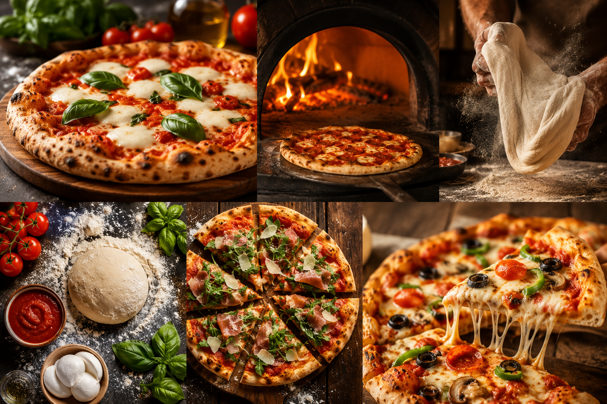
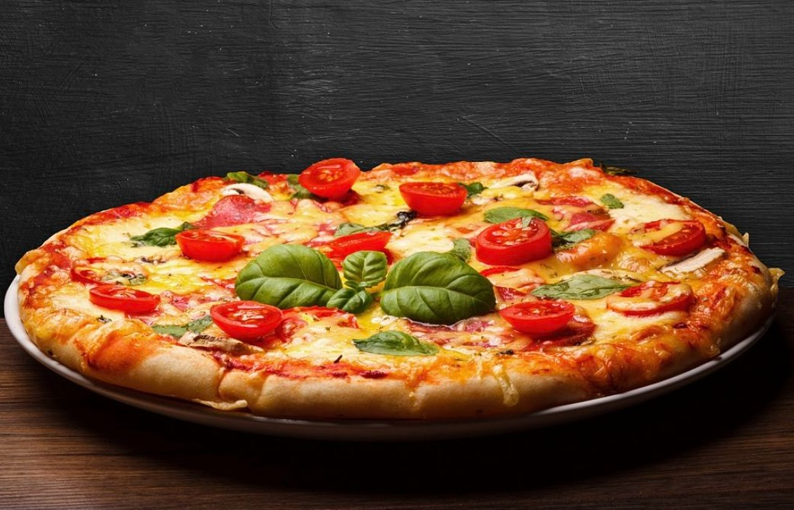

Welkom bij PizzaHub! 🍕
De geur van versgebakken deeg, gesmolten kaas en kruidige tomatensaus… weinig gerechten zijn zo onweerstaanbaar als pizza. Wat ooit begon als eenvoudig straatvoedsel in het zonnige Napels, is uitgegroeid tot een wereldwijd fenomeen dat mensen overal samenbrengt.Of je nu houdt van een klassieke Margherita of juist gaat voor een rijk belegde pizza vol verrassende toppings: er is altijd een pizza die bij jou past. Op PizzaHub nemen we je mee in de heerlijke wereld van pizza – van oorsprong tot oven.

🍅 De oorsprong van pizza
Pizza vindt zijn roots in Napels, Italië, waar het lange tijd een betaalbare en voedzame maaltijd was voor de lokale bevolking. De beroemde pizza Margherita, met tomaat, mozzarella en basilicum, werd een icoon – niet alleen door zijn smaak, maar ook door de kleuren die verwijzen naar de Italiaanse vlag.🧀 De kracht van eenvoudige ingrediënten
- Deeg – de basis van elke pizza: luchtig van binnen, licht krokant van buiten
- Tomatensaus – vaak gemaakt van smaakvolle San Marzano-tomaten
- Kaas – romige mozzarella die perfect smelt
- Toppings – van verse groenten tot vlees, vis of kruiden… hier begint de creativiteit
🌍 Verschillende pizzastijlen
- Napolitaanse pizza – een dunne bodem met een zachte, luchtige rand
- Romeinse pizza – dun en heerlijk krokant
- Amerikaanse pizza – dikker, rijk belegd en extra vullend
- Pizza al taglio – rechthoekig gesneden en per stuk verkocht, perfect voor onderweg
🔥 Hoe wordt pizza bereid?
De manier waarop een pizza wordt gebakken maakt een wereld van verschil. Traditioneel gebeurt dit in een houtoven op hoge temperatuur, wat zorgt voor die kenmerkende smaak en textuur. Maar ook in een elektrische oven of gewoon thuis kun je verrassend lekkere pizza’s maken – als je weet hoe.👨🍳 Ontdek en experimenteer
- Tips voor het maken van perfect pizzadeeg
- Geheimen achter fermentatie en smaakontwikkeling
- Inspirerende recepten, van klassiek tot modern
- Inzichten in pizzastijlen van over de hele wereld
Pizza is simpel, veelzijdig en altijd in ontwikkeling
Dus waar wacht je nog op? Ontdek nieuwe smaken, experimenteer in je eigen keuken en proef wat pizza zo bijzonder maakt. 🍕